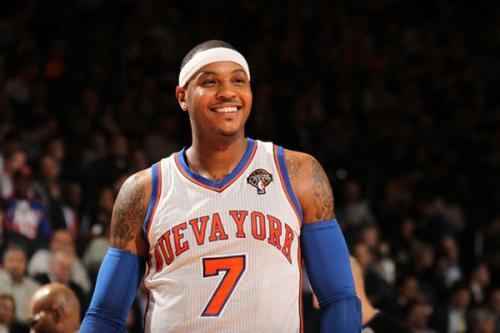
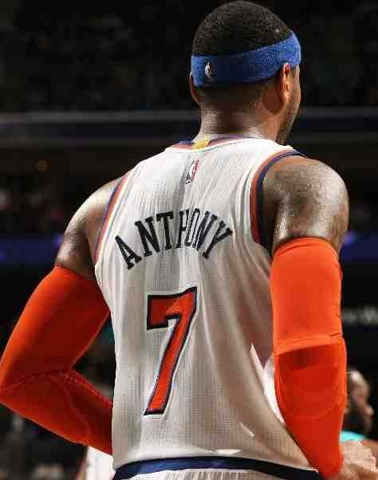
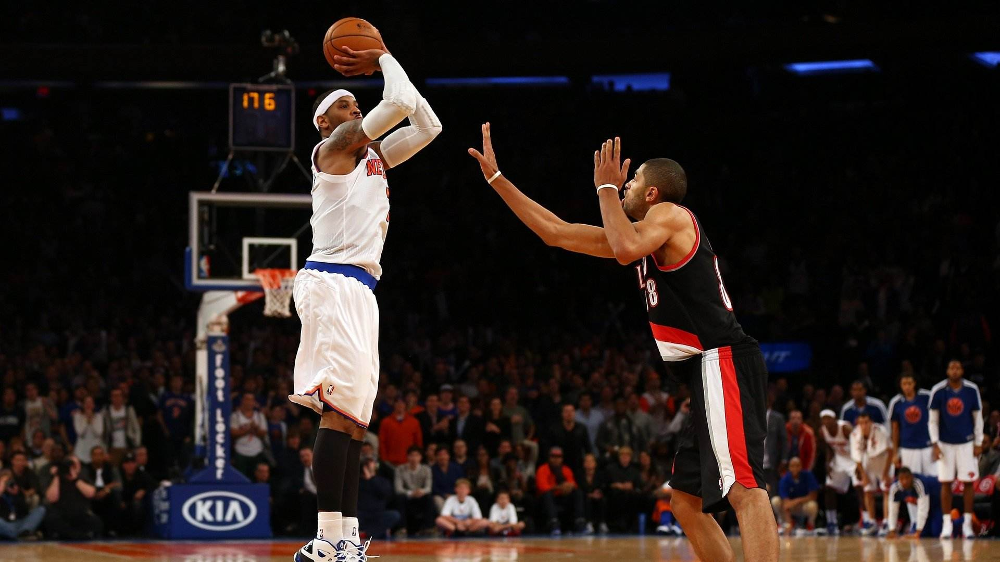

卡梅隆安东尼
卡梅隆·凯恩·安东尼（英语：Carmelo Kyam Anthony，1984年5月29日－），出生于纽约州布鲁克林，
绰号“甜瓜”、“美国队长”，美国职业篮球运动员.场上位置为小前锋，在他的职业生涯中先后效力过丹佛掘金
、纽约尼克斯、俄克拉何马城雷霆及休斯敦火箭，现效力于波特兰开拓者。因个人单打手段众多且得分能力出色，
故也被称为“联盟最多单打手段的球员”。
重要事件
- 在2003年，NBA选秀大会，并于首轮第三顺位被丹佛掘金选中。
- 在2004年，到2018年，安东尼连续五年带领掘金队打进季后赛，并赢得了两次分区冠军。
- 在2009年，安东尼率领掘金队首次闯入西部决赛。
- 在2011年，他在季中交易截止日前被掘金交易到纽约尼克斯。
- 在2014年,1月24日，安东尼在对上夏洛特山猫的比赛中，攻下了职业生涯最高的62分，改写了麦迪逊广场花园单场最高得分纪录。
- 在2016年,夏季奥运会夺得金牌。他是美国队史得分王、篮板王以及获得金牌最多的球员，里约奥运会结束后安东尼宣布退出美国国家队。
成就和荣誉
- 2002年 NCAA冠军 （获奖） ESPY年度
- 2003年 ESPY年度卓越表现奖 （获奖） 最佳大学生
- 2003年 最佳大学生奖 （获奖） 西部月最佳新秀
- 2003年 赛季西部月最佳新秀奖 （获奖） 雅典奥运会
- 2004年 男篮铜牌 （获奖） 丹佛全明星赛新秀挑战赛
- 2005年 MVP （获奖） 世锦赛
- 2006年 男篮铜牌 （获奖） 年度最佳运动员
- 2007年 年度最佳运动员美国男子篮球最佳运动员 （获奖） 北京奥运会
- 2008年 男篮金牌 （获奖） 伦敦奥运会
- 2012年 男篮金牌 （获奖） 里约奥运会
- 2016年 男篮金牌 （获奖） 球员工会
- 2017年 最佳队友[112] （获奖）
职业生涯最高记录
| 项目 | 数据 | 比赛时间 | 比赛对手 |
|---|
| 得分 | 62 | 2014-01-24 | 山猫 |
| 篮板 | 22 | 2010-11-15 | 太阳 |
| 助攻 | 11 | 2009-02-04 | 雷霆 |
| 盖帽 | 4 | 2003-12-02 | 骑士 |
| 抢断 | 6 | 2013-10-31 | 公牛 |
球场照



人物评价
安东尼会先观察，确认防守者之防守位置不当下，才迅速下球过人投篮。
他的左、右转身运球和卡位要球在内线威力巨大，在采用左手或右手运球瞬间发现，
让对手防守的身体重心偏差，然后快速的以转身运球趁虚而入过。
同时，安东尼也会运用交叉步和横向运球来保护球并寻找投篮时机。 （腾讯体育评）